건축설비기사 (2021-05-15 기출문제)
1과목: 건축일반
1. 건물내외의 기압차를 이용한 지붕 구조는?
- 절판구조
- 현수구조
- 곡면판구조
- 공기막구조
(정답률: 76%)

2. 벽돌 쌓기에서 공간 쌓기를 하는 가장 중요한 목적으로 옳은 것은?
- 방청
- 방습
- 방화
- 내화
(정답률: 82%)
3. 장기간 체재하는 데 적합한 호텔로 부엌과 셀프 서비스 시설을 갖춘 일반적인 호텔은?
- 커머셜 호텔
- 레지덴셜 호텔
- 아파트먼트 호텔
- 터미널 호텔
(정답률: 81%)
4. 사무소 건축의 코어 구성형식 중 편심코어형식에 관한 설명으로 옳은 것은?
- 중심코어 형식에 비하여 사무공간을 자유롭게 구성하기 어렵다.
- 방재상 유리하며 바닥면적이 커지면 서브코어가 필요하지 않다.
- 코어 접합부에서 변형이 과대해지지 않는 계획이 필요하다.
- 중심코어 형식에 비하여 내진성능이 우수하다.
(정답률: 65%)
5. 건축화조명에 관한 설명으로 옳지 않은 것은?
- 광천장은 천정 전면에 루버를 갖고, 그 뒤쪽에 광원을 배치한 것이다.
- 조명기구를 천장, 벽 등의 실 구성면 중에 장치하여 건축 내장의 일부와 같이 취급한 조명방식을 말한다.
- 조명기구로 인한 위화감을 없애고 실내의장에 통일성을 갖도록 하기 위해 사용한다.
- 벽면조명으로는 코니스 조명이 있다.
(정답률: 61%)
6. 왕대공지붕틀에 사용되는 부재가 아닌 것은?
- 평보
- 빗대공
- 대공잡이
- 종보
(정답률: 58%)
7. 실내 공기 오염의 원인이 아닌 것은?
- 온도의 상승
- 산소의 증가
- 먼지의 증가
- 이산화탄소의 증가
(정답률: 79%)
8. 층고가 4m인 박물관에 계단을 대체하여 경사로를 설치하고자 한다. 최소 몇 m의 수평거리가 필요한가?
- 18m
- 24m
- 32m
- 48m
(정답률: 63%)
9. 아파트 단면 형식 중 복층형(maisonette type)의 장점을 잘못 설명한 것은?
- 거주성과 프라이버시가 양호하다.
- 소규모에 건축물에 유리한 형식이다.
- 주택내 공간의 변화가 있다.
- 유효면적이 증가한다.
(정답률: 75%)
10. 상점의 쇼윈도에 관한 설명으로 옳지 않은 것은?
- 쇼윈도의 바닥높이는 귀금속점의 경우는 낮을수록, 운동용품점의 경우는 높을수록 좋다.
- 국부조명은 배열을 바꾸는 경우를 고려하여 자유롭게 수량, 방향, 위치를 변경할 수 있도록 한다.
- 유리면의 반사방지를 위해 쇼윈도 안의 조도를 외부보다 밝게 한다.
- 쇼윈도 내부의 조명에 주광색의 전구를 필요로 하는 상점은 의료품점, 약국 등이다.
(정답률: 73%)
11. 상점건축에서 고객의 접근성을 좋게 하기 위한 방법으로 옳지 않은 것은?
- 고객의 동선은 짧게, 직원동선은 길게 계획하였다.
- 상점의 바닥면을 평탄하게 계획하였다.
- 천장면은 내부조명 밝기를 고려하여 색채를 계획하였다.
- 상점 내부에 고객의 시선을 집중시키는 요소를 설치하였다.
(정답률: 83%)
12. 사무소건축의 코어(core) 계획에 관한 설명으로 옳지 않은 것은?
- 코어는 최소한의 규모로 계획할 것
- 잡용실과 급탕실은 접근시킬 것
- 코어 내의 각 공간은 각 층마다 공통의 위치에 있을 것
- 엘리베이터 홈은 출입구에 최대한 접근해 있도록 할 것
(정답률: 74%)
13. 홀 용적 5000m3, 잔향시간 1.6초인 실에서 잔향시간을 1초로 만들기 위해 추가적으로 필요한 흡음력은?
- 220m2
- 275m2
- 300m2
- 450m2
(정답률: 61%)
14. 원형 띠철근으로 둘러싸인 압축부재의 축방향 주철근의 최소 개수는?
- 3개
- 4개
- 6개
- 8개
(정답률: 62%)
15. 주택설계의 방향에 관한 설명으로 옳지 않은 것은?
- 생활의 쾌적함을 증대시키도록 한다.
- 가족본위의 생활을 추구하도록 한다.
- 좌식생활 위주의 계획을 한다.
- 가사노동의 경감을 고려한다.
(정답률: 81%)
16. 학교의 배치계획 중 분산병렬형에 대한 설명으로 옳지 않은 것은?
- 일종의 핑거 플랜이다.
- 화재 및 비상시에 불리하고 일조ㆍ통풍 등 환경조건이 불균등하다.
- 편복도로 할 경우 복도면적이 커지고 단조로워 유기적인 구성을 취하기가 어렵다.
- 넓은 부지가 필요하다.
(정답률: 74%)
17. 치수조정(Modular Coordination)의 장점이 아닌 것은?
- 소량생산의 특화
- 설계작업의 단순화
- 공기단축
- 생산비의 절감
(정답률: 77%)
18. 다음과 같은 조건에서 실내측 벽면의 표면 온도는?
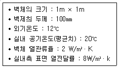
- 18℃
- 19℃
- 20℃
- 21℃
(정답률: 59%)
19. 병원의 평면계획상 구급동선은 어디에 연결되어야 하는가?
- 병동부
- 외래부
- 중앙진료부
- 관리부
(정답률: 65%)
20. 목구조에 관한 설명으로 옳지 않은 것은?
- 노출된 목재는 자연미가 있어 인간에게 친숙함을 전달할 수 있다.
- 목재가 구조재로 활용되는 것은 비강도가 크기 때문이다.
- 가새를 활용하여 횡력에 저항이 가능하다.
- 목재의 수축 팽창이 거의 없어 단열성이 매우 우수하다.
(정답률: 73%)
2과목: 위생설비
21. 어느 사무소 건물의 연면적이 5000m2일 때 1일 예상 급수량은? (단, 이 건물의 유효면적과 연면적의 비는 60%이고, 유효면적당 인원은 0.2인/m2이며, 1인 1일당 급수량은 100L이다.)
- 30m3/d
- 60m3/d
- 300m3/d
- 600m3/d
(정답률: 60%)
22. 다음 중 간접배수로 하여야 하는 것은?
- 세면기
- 대변기
- 소변기
- 식기세정기
(정답률: 75%)
23. 직관내의 마찰손실수두와 관련된 다르시-와이스바하의 식에서 유체의 흐름이 층류일 경우 마찰계수 λ는?
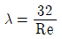
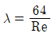
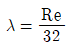
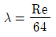
(정답률: 65%)
24. 동관의 관에 두께에 따른 분류에 속하지 않는 것은?
- K형
- L형
- M형
- N형
(정답률: 66%)
25. 생물학적 오수처리방법 중 활성오니법에 속하는 것은?
- 접촉산화방식
- 살수여상방식
- 장기간폭기방식
- 회전원판접촉방식
(정답률: 61%)
26. 직경 100mm의 강관에 2.4m3/min의 물을 통과시킬 때 강관내의 평균 유속은?
- 2.4 m/s
- 4.2 m/s
- 5.1 m/s
- 7.2 m/s
(정답률: 57%)
27. 국소식 급탕방식에 관한 설명으로 옳은 것은?
- 배관 및 기기로부터의 열손실이 중앙식보다 많다.
- 배관에 의해 필요 개소 어디든지 급탕할 수 있다.
- 건물 완공 후에도 급탕 개소의 증설이 중앙식보다 쉽다.
- 기구의 동시이용률을 고려하므로 가열장치의 총용량을 적게 할 수 있다.
(정답률: 60%)
28. 1000L/h의 급탕을 전기온수기를 사용하여 공급 할때 시간당 전력사용량은? (단, 물의 비열 4.2kJ/kg·K, 밀도 1kg/L, 급탕온도 70℃, 급수온도 10℃, 전기온수기의 전열효율은 95%로 한다.)
- 63.4kW/h
- 66.5kW/h
- 70.2kW/h
- 73.7kW/h
(정답률: 39%)
29. 세정밸브식 대변기의 급수관 관경은 최소 얼마이상으로 하여야 하는가?
- 20A
- 25A
- 30A
- 40A
(정답률: 61%)
30. 급수배관의 설계 및 시공에 관한 설명으로 옳지 않은 것은?
- 구조체의 관통부에는 슬리브를 사용한다.
- 물이 고일 수 있는 부분에는 퇴수밸브를 설치한다.
- 음료용 배관과 비음료용 배관을 크로스 커넥션 하지 않는다.
- 급수관과 배수관이 교차될 경우, 배수관은 급수관 위에 매설한다.
(정답률: 75%)
31. 탕의 사용상태가 간헐적이며 일시적으로 사용량이 많은 건물에서 급탕설비의 설계 방법으로 가장 알맞은 것은? (단, 중앙식 급탕방식이며 증기를 열원하는 열교환기 사용)
- 저탕용량을 크게 하고 가열능력도 크게 한다.
- 저탕용량을 크게 하고 가열능력은 작게 한다.
- 저탕용량을 작게 하고 가열능력은 크게 한다.
- 저탕용량을 작게 하고 가열능력도 작게 한다.
(정답률: 53%)
32. 펌프의 캐비테이션에 관한 설명으로 옳지 않은 것은?
- 비정상적인 소음과 진동이 발생한다.
- 캐비테이션을 방지하기 위해 펌프의 흡입양정을 크게 한다.
- 캐비테이션이 진행되면 펌프의 양수량, 양정 및 효율이 저하되어 간다.
- 캐비테이션을 방지하기 위해 설계상의 펌프 운전범위내에서 항상 유효 NPSH가 필요 NPSH보다 크게 되도록 배관계획을 한다.
(정답률: 62%)
33. 펌프의 흡입양정이 10m 이고, 20m 높이에 있는 옥상탱크에 양수할 때 전양정은 얼마인가? (단, 관로의 전손실수두는 100kPa이다.)
- 약 31m
- 약 40m
- 약 110m
- 약 130m
(정답률: 49%)
34. 플러시 밸브식 대변기에 관한 설명으로 옳지 않은 것은?
- 대변기의 연속사용이 불가능하다.
- 일반 가정용으로 사용이 곤란하다.
- 로 탱크 방식에 비해 최저 필요 수압이 크다.
- 세정음은 유수음도 포함되기 때문에 소음이 크다.
(정답률: 68%)
35. 급수방식에 관한 설명으로 옳은 것은?
- 수도직결방식은 단수 시에도 지속적인 급수가 가능하다.
- 압력수조방식은 전력 차단 시에도 지속적인 급수가 가능하다.
- 펌프직송방식에서 변속방식은 펌프의 회전수를 제어하는 방식이다.
- 고가수조방식은 고층으로의 급수가 불가능하다는 단점이 있다.
(정답률: 61%)
36. 급탕배관에서 일반적으로 환탕관의 관경은 급탕관 관경의 얼마 정도로 하는가?
- 1/3
- 1/2
- 2배
- 3배
(정답률: 62%)
37. 배수통기방식중 공기혼합이음쇠(aerator fitting)를 사용하는 방식은?
- 소벤트(sovent)식
- 결합통기방식
- 루프통기방식
- 각개통기방식
(정답률: 65%)
38. 다음 설명에 알맞은 유체 정역학 관련 이론은?
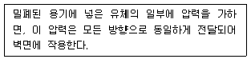
- 파스칼의 원리
- 피토관의 원리
- 베르누이의 정리
- 토리첼리의 정리
(정답률: 65%)
39. 배수관 관경결정에 이용되는 기구배수부하단위의 기준(1DFU)이 되는 기구는?
- 소변기
- 세면기
- 대변기
- 욕조
(정답률: 69%)
40. 최대강우량 120mm/h의 지역에 있는 지붕의 수평투영면적이 1200m2인 건물에 4개의 우수수직관을 설치할 경우, 우수수직관의 관경은?
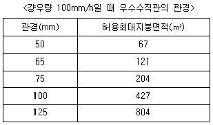
- 50mm
- 65mm
- 75mm
- 100mm
(정답률: 55%)
3과목: 공기조화설비
41. 바닥면에서 1m의 위치에 중성대가 있는 실에서 바닥면상 2m 지점에서의 실내외 압력차는? (단, 실내공기의 밀도는 1.2kg/m3이며, 실외공기의 밀도는 1.25kg/m3이다.)
- 실내가 0.1mmAq 높다.
- 실외가 0.1mmAq 높다.
- 실내가 0.⑤mmAq 높다.
- 실외가 0.⑤mmAq 높다.
(정답률: 54%)
42. 공기조화방식 중 전공기 방식의 일반적인 특징으로 옳은 것은?
- 덕트 스페이스가 필요하다.
- 실내공기의 오염이 심하다.
- 실내에 누수의 염려가 많다.
- 중간기에 외기냉방을 할 수 없다.
(정답률: 65%)
43. 축열시스템에 관한 설명으로 옳지 않은 것은?
- 심야전력의 이용이 가능하다.
- 냉동기의 용량을 감소시킬 수 있다.
- 호텔의 공공부분과 같이 간헐운전이 심한 경우에는 적용할 수 없다.
- 빙축열시스템은 냉각을 위한 냉동기, 축열을 위한 빙축열조, 외부와의 열교환을 위한 열교환기 등으로 구성된다.
(정답률: 67%)
44. 다음과 같은 조건에 있는 체적이 200m3인 실의 겨울철 환기횟수가 0.5회/h일 때 실내로 들어오는 틈새바람에 의한 현열손실량은?
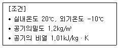
- 337W
- 1010W
- 1212W
- 3636W
(정답률: 42%)
45. 냉ㆍ난방부하 계산에 관한 설명으로 옳지 않은 것은?
- 투습으로 인한 열부하는 매우 작기 때문에 일반적으로 부하계산에서 제외한다.
- 유리창 종류와 블라인드 유무에 따라 달라지는 차폐계수는 그 최대값이 1.0 이다.
- 작업상태가 동일한 경우 인체로부터의 발생열량은 실내건구온도가 높을수록 현열량과 잠열량 모두 커진다.
- 태양으로부터의 일사 열부하는 냉방부하 계산에서는 포함되나, 난방부하 계산에서는 제외되는 것이 일반적이다.
(정답률: 39%)
46. 다음 중 날개(blade)의 형상이 전곡형인 송풍기에 속하는 것은?
- 익형 송풍기
- 다익형 선풍기
- 터보형 선풍기
- 관류형 송풍기
(정답률: 41%)
47. 천장 취출구에서 하향 취출을 하는 경우의 확산반경에 관한 설명으로 옳지 않은 것은?
- 거주영역에 최대확산반경이 미치지 않는 영역이 없도록 취출구를 배치한다.
- 최소확산반경 내에 보나 벽 등의 장애물이 있으면 드리프트(drift)가 발생하지 않는다.
- 최소확산반경 내에 인접한 취출구의 최소확산반경이 겹치면 편류현상이 발생할 수 있다.
- 거주영역에서 평균풍속이 0.125~0.25m/s로 되는 최대 단면적의 반경을 최소확산반경이라 한다.
(정답률: 55%)
48. 다음 습공기선도상에서 화살표 방향(A→B)으로 공기의 상태가 변화하는 것을 무엇이라고 하는가?
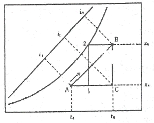
- 가열감습변화
- 가열가습변화
- 냉각감습변화
- 냉각가습변화
(정답률: 62%)
49. 다음과 같은 조건에 있는 냉각수 배관계통에서 냉각수 펌프의 전양정(mAq)은?
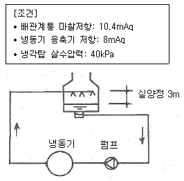
- 21.8
- 22.4
- 25.4
- 61.4
(정답률: 42%)
50. 냉각탑이 응축기보다 낮은 위치에 있는 경우 냉각수 펌프가 정지할 때마다 응축기 주변이 극단적인 부(-)압이 되지 않도록 설치하는 것은?
- 딥 튜브(deep tube)
- 더트 포켓(dirt pocket)
- 플래시 탱크(flash tank)
- 사이폰 브레이크(syphon breaker)
(정답률: 64%)
51. 몰리에르(Mollier)선도를 나타낸 그림에서 히트펌프의 난방 시 성적계수를 산정하는 식은?
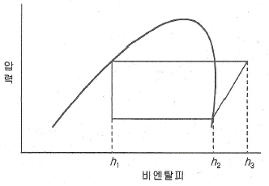
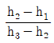
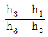
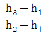
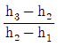
(정답률: 50%)
52. 공기조화방식 중 단일덕트 변풍량방식의 구성기기에 속하지 않는 것은?
- V.A.V Uni
- 실내 서모스탯
- 냉온풍 혼합상자
- 송풍량 조절기기
(정답률: 49%)
53. 어떤 덕트 내부의 풍속을 측정한 결과 7m/s이었다. 이 때의 동압은 얼마인가? (단, 공기의 밀도는 1.2kg/m3이다.)
- 2.5Pa
- 24.5Pa
- 29.4Pa
- 49Pa
(정답률: 46%)
54. 공기조화방식의 열운송 동력의 크기 순서가 옳게 나열된 것은?
- 전공기방식 ＞ 전수방식 ＞ 공기・수방식
- 공기・수방식 ＞ 전수방식 ＞ 전공기방식
- 전공기방식 ＞ 공기・수방식 ＞ 전수방식
- 전수방식 ＞ 공기・수방식 ＞ 전공기방식
(정답률: 61%)
55. 장방형 단면으로 된 4각 엘보의 국부저항 손실계수가 0.5이며 풍속이 6m/s일 때, 이 엘보에서의 국부저항은? (단, 공기의 밀도는 1.2kg/m3이다.)
- 1.1Pa
- 2.2Pa
- 10.8Pa
- 21.6Pa
(정답률: 44%)
56. 에어필터의 효율 측정법에 속하지 않는 것은?
- 중량법
- 비색법
- 체적법
- DOP법
(정답률: 57%)
57. 2개 이상의 엘보를 사용하여 이음부의 나사 회전을 이용해서 배관의 신축을 흡수하는 신축이음쇠는?
- 루프형
- 벨로즈형
- 슬리브형
- 스위블형
(정답률: 67%)
58. 실내에 80W 용량의 형광등이 30개 있다. 조명 점등률을 50%라고 하면 저명기구로부터의 취득 열량은? (단, 안정기는 실내에 있으며 발열계수는 1.2로 한다.)
- 1000W
- 1200W
- 1440W
- 2400W
(정답률: 65%)
59. 밸브를 완전히 열면 유체 흐름의 단면적 변화가 없기 때문에 마찰 저항이 적어서 흐름의 단속용으로 사용되는 밸브로, 게이트 밸브(gatevalve)라고도 불리는 것은?
- 앵글 밸브
- 체크 밸브
- 글로브 밸브
- 슬루스 밸브
(정답률: 59%)
60. 건구온도 20℃, 절대습도 0.012kg/kg'인 습공기의 엔탈피(kJ/kg)는? (단, 건공기의 정압비열=1.01kJ/kgㆍK, 0℃에서 포화수의 증발잠열=2501kJ/kg, 수증기의 정압비열=1.85kJ/kgㆍK)
- 24.2
- 32.6
- 48.4
- 50.7
(정답률: 32%)
4과목: 소방 및 전기설비
61. C급 화재가 의미하는 화재의 종류는?
- 일반화재
- 유류화재
- 주방화재
- 전기화재
(정답률: 71%)
62. 자계의 방향이나 도체에 흐르는 전류 방향이 바뀌면 도체가 움직이는 방향도 바뀌게 되는데, 이러한 도체가 움직이는 방향을 알 수 있는 것으로 전동기에 적용되는 법칙은?
- 렌쯔의 법칙
- 앙페르의 법칙
- 플레밍의 왼손법칙
- 플레밍의 오른손법칙
(정답률: 57%)
63. 3상 유도전동기의 속도제어 방법이 아닌 것은?
- 슬립을 변화시킨다.
- 전압을 변화시킨다.
- 극수를 변화시킨다.
- 주파수를 변화시킨다.
(정답률: 52%)
64. 도선의 길이를 10배, 단면적을 10배로 크게 했을 때 전기저항의 크기는 어떻게 되는가?
- 2배 증가한다.
- 10배 증가한다.
- 100배 증가한다.
- 변하지 않는다.
(정답률: 58%)
65. 220[V]의 전압이 10[Ω]의 저항에 작용했을 때 소비전력은?
- 2.42[kW]
- 4.84[kW]
- 24.2[kW]
- 48.4[kW]
(정답률: 57%)
66. 다음 설명에 알맞은 배선 공사는?
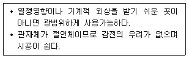
- 금속관 공사
- 버스덕트 공사
- 플로어덕트 공사
- 합성수지관 공사(CD관 제외)
(정답률: 71%)
67. 할로겐 램프에 관한 설명으로 옳지 않은 것은?
- 흑화가 거의 일어나지 않는다.
- 연색성이 좋고 설치가 용이하다.
- 휘도가 낮아 현위가 발생하지 않는다.
- 광속이나 색은도의 저하가 극히 적다.
(정답률: 62%)
68. 급기온도를 일정하게 하고 풍량을 변화시킴으로서 실내 온도를 유지하는 가변풍량제어(VAV)에 적용되지 않는 것은?
- 정압제어
- 환기온도제어
- 송풍기풍량 비례적분제어
- VAV터미널 유닛 실온제어
(정답률: 36%)
69. 스프링클러헤드가 설치되어 있는 배관으로 정의 되는 것은?
- 주배관
- 교차배관
- 가지배관
- 급수배관
(정답률: 72%)
70. 스프링클러설비의 설치장소가 아파트인 경우, 스프링클러설비 수원의 저수량 산정시 기준이 되는 스프링클러헤드의 기준개수는? (단, 폐쇄형 스피링클러헤드를 사용를 사용하는 경우)
- 10개
- 20개
- 30개
- 40개
(정답률: 57%)
71. 어느 학교에서의 교실에 32[W] 2구형 형광등기구를 설치하여 평균조도를 400[lx]로 설계하고자 할 때 설치하여야 하는 등기구의 최소 대수는? (단, 교실의 면적은 200[m2]인, 형광등 1개 광속은 3000[lm], 조명률은 0.6, 보수율은 0.8이다.)
- 15개
- 28개
- 30개
- 55개
(정답률: 45%)
72. 다음 중 일반적으로 시퀀스 제어가 적용되는 것은?
- 정전압장치
- 자동평형기록계
- 커피자동판매기
- 레이더위치추적장치
(정답률: 65%)
73. 부동충전방식의 일종으로 자기방전량만을 항상 충전하는 축전지 충전방식은?
- 균등 충전
- 보통 충전
- 급속 충전
- 세류 충전
(정답률: 55%)
74. 다음은 옥외소화전설비의 소화전함에 관한 설명이다. ( )안에 알맞은 것은?
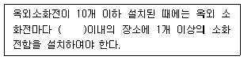
- 5m
- 10m
- 15m
- 20m
(정답률: 58%)
75. 교류전력에 관한 설명으로 옳지 않은 것은?
- 무효전력이 크면 역률이 커진다.
- 유효전력은 실제로 소비되는 전력이다.
- 역률이 1일 때 유효전력과 피상전력은 같다.
- 전열기와 같이 순수하게 저항성분만으로 구성되는 부하인 경우 전력은 전압[V]×전류[A]이다.
(정답률: 59%)
76. 옥내소화전설비의 가압송수장치에 순환배관을 설치하는 이유는?
- 배관 내 압력변동을 검지하기 위해
- 체절운전 시 수온의 상승을 방지하기 위해
- 각 소화전에 균등한 수압이 부여되도록 하기 위해
- 배관 내 압력손실에 따른 펌프의 빈번한 기동을 방지하기 위해
(정답률: 37%)
77. 10대의 전동기에 모두 동일한 전압을 인가하려면 어떻게 연결하면 되는가?
- 직렬결선
- 병렬결선
- 직렬결선 2회로와 병렬결선 8회로
- 직렬결선 2회로와 병렬결선 4회로
(정답률: 69%)
78. 다음 중 천장이 높고 격납고, 아트리움, 공항 등과 같은 곳에서 가장 효과적인 화재 감지기는?
- 불꽃 감지기
- 차동식 감지기
- 보상식 감지기
- 정온식 감지기
(정답률: 57%)
79. 교류전력간의 관계식으로 옳은 것은?
- 피상전력=유효전력+무효전력
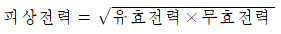
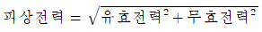
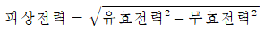
(정답률: 62%)
80. 자동화재탐지설비의 감지기 설치에 관한 설명으로 옳지 않은 것은?
- 천장 또는 반자의 옥내에 면하는 부분에 설치한다.
- 정온식 및 보상식 감지기는 실내로의 공기유입구로부터 0.5m 이상 떨어진 위치에 설치한다.
- 보상식 스포트형 감지기는 정온점이 감지기 주위의 평상시 최고온도보다 20℃ 이상 높은 것으로 설치한다.
- 정온식 감지기는 주방ㆍ보일러실 등으로서 다량의 화기를 취급하는 장소에 설치하되, 공칭작동온도가 최고주위온도보다 20℃ 이상 높은 것으로 설치한다.
(정답률: 48%)
5과목: 건축설비관계법규
81. 다음은 건축법령상 건축신고와 관련된 기준 내용이다. ( )안에 속하지 않는 것은?
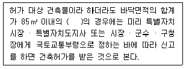
- 신축
- 증축
- 개축
- 재축
(정답률: 63%)
82. 건축법령상 공동주택에 속하지 않는 것은?
- 기숙사
- 연립주택
- 다가구주택
- 다세대주택
(정답률: 62%)
83. 다음 중 건축법령상 다중이용 건축물에 속하지 않는 것은? (단, 층수가 16층 미만이며 해당 용도로 쓰는 바닥면적의 합계가 5000m2 이상인 건축물의 경우)
- 종교시설
- 판매시설
- 업무시설
- 숙박시설 중 관광숙박시설
(정답률: 65%)
84. 공동주택에서 리모델링에 대비한 특례와 관련하여 리모델링이 쉬운 구조에 해당하지 않는 것은?
- 구조체는 철골구조 또는 목구조로 구성되어 있을 것
- 구조체에서 건축설비, 내부 마감재료 및 외부 마감재료를 분리할 수 있을 것
- 개별 세대 안에서 구획된 실의 크기, 개수 또는 위치 등을 변경할 수 있을 것
- 각 세대는 인접한 세대와 수직 또는 수평 방향으로 통합 하거나 분할할 수 있을 것
(정답률: 48%)
85. 건축물의 에너지절약설계기준상 단열계획에 대한 건축부분의 권장사항으로 옳지 않은 것은?
- 외벽 부위는 내단열로 시공한다
- 외피의 모서리 부분은 열교가 발생하지 않도록 단열재를 연속적으로 설치한다.
- 건물의 창 및 문은 가능한 작게 설계하고, 특히 열손실이 많은 북측 거실의 창 및 문의 면적은 최소화한다.
- 태양열 유입에 의한 냉∙난방부하를 저감할 수 있도록 일사조절장치, 태양열투과율, 창 및 문의 면적비 등을 고려한 설계를 한다.
(정답률: 62%)
86. 신축공동주택등의 기계환기설비의 설치에 관한 기준 내용으로 옳지 않은 것은?
- 기계환기설비의 환기기준은 시간당 실내공기 교환횟수로 표시한다.
- 기계환기설비는 주방 가스대 위의 공기배출장치, 화장실의 공기배출 송풍기 등 급속환기설비와 함께 설치하여서는 안된다.
- 세대의 환기량 조절을 위하여 환기설비의 정격풍량을 최소·적정·최대의 3단계 또는 그 이상으로 조절할 수 있는 체계를 갖춘다.
- 하나의 기계환기설비로 세대 내 2 이상의 실에 바깥공기를 공급할 경우의 필요 환기량은 각 실에 필요한 환기량의 합계 이상이 되도록 한다.
(정답률: 44%)
87. 다음의 소방시설 중 경보설비에 속하지 않는 것은?
- 통합감시시설
- 비상콘센트설비
- 자동화재탐지설비
- 자동화재속보설비
(정답률: 69%)
88. 방염성능기준 이상의 실내장식물 등을 설치하여야 하는 특정소방대상물에 속하지 않는 것은?
- 수영장
- 숙박시설
- 의료시설 중 종합병원
- 방송통신시설 중 방송국
(정답률: 69%)
89. 각 층의 거실면적의 합계가 1000m2로 동일한 15층의 문화 및 집회시설 중 공연장에 설치하여야 하는 승용승강기의 최소 대수는? (단, 15인승 승강기의 경우)
- 4대
- 5대
- 6대
- 7대
(정답률: 48%)
90. 건축허가 등을 할 때 미리 소방본부장 또는 소방서장의 동의를 받아야 하는 대상 건축물의 층수 기준은? (단, 층수는 건축법령에 따라 산정된 층수를 말한다.)
- 3층 이상인 건축물
- 6층 이상인 건축물
- 10층 이상인 건축물
- 12층 이상인 건축물
(정답률: 59%)
91. 주거에 쓰이는 바닥면적의 합계가 450m2인 주거용 건축물에 배관하는 음용수용 급수관의 최소 지름은?
- 20mm
- 25mm
- 32mm
- 40mm
(정답률: 43%)
92. 건축물에 설치하는 굴뚝에 관한 기준 내용으로 옳지 않은 것은?
- 금속제 굴뚝은 목재 기타 가연재료로부터 10cm 이상 떨어져서 설치할 것
- 굴뚝의 옥상 돌출부는 지붕면으로부터의 수직 거리를 1m 이상으로 할 것
- 금속제 굴뚝으로서 건축물의 지붕 속ㆍ반자위 및 가장 아랫바닥 밑에 있는 굴뚝의 부분은 금속 외의 불연재료로 덮을 것
- 굴뚝의 상단으로부터 수평거리 1m 이내에 다른 건축물이 있는 경우에는 그 건축물의 처마보다 1m 이상 높게 할 것
(정답률: 53%)
93. 문화 및 집회시설 중 공연장의 개별 관람실 출구의 설치기준 내용으로 옳지 않은 것은? (단, 개별 관람실의 바닥면적이 300m2이상인 경우)
- 관람실별로 2개소 이상 설치할 것
- 각 출구의 유효너비는 1.5m 이상일 것
- 관람실로부터 바깥쪽으로의 출구로 쓰이는 문은 안여닫이로 할 것
- 개별 관람실 출구의 유효너비의 합계는 개별 관람실의 바닥면적 100m2마다 0.6m의 비율로 산정한 너비 이상으로 할 것
(정답률: 54%)
94. 건축물의 옥상에 헬리포트를 설치하거나 헬리콥터를 통하여 인명 등을 구조할 수 있는 공간을 확보하여야 하는 대상 건축물 기준으로 옳은 것은? (단, 건축물의 지붕을 평지붕으로 하는 경우)
- 11층 이상인 층의 바닥면적의 합계가 3,000m2 이상인 건축물
- 11층 이상인 층의 바닥면적의 합계가 5,000m2 이상인 건축물
- 11층 이상인 층의 바닥면적의 합계가 10,000m2 이상인 건축물
- 11층 이상인 층의 바닥면적의 합계가 12,000m2 이상인 건축물
(정답률: 63%)
95. 건축물에 급수ㆍ배수ㆍ환기ㆍ난방설비를 설치하는 경우, 건축기계설비기술사 또는 공조냉동기계기술사의 협력을 받아야 하는 대상 건축물의 연면적 기준은? (단, 창고시설은 제외)
- 3,000m2 이상
- 5,000m2 이상
- 10,000m2 이상
- 15,000m2 이상
(정답률: 50%)
96. 계단의 설치에 관한 기준 내용으로 옳지 않은 것은?
- 중학교의 계단인 경우, 단너비는 26cm 이상으로 한다.
- 초등학교의 계단인 경우, 단너비는 26cm 이상으로 한다.
- 판매시설 중 상점인 경우, 계단 및 계단참의 유효너비는 90cm 이상으로 한다.
- 문화 및 집회시설 중 공연장의 경우, 계단 및 계단참의 유효너비는 120cm 이상으로 한다.
(정답률: 52%)
97. 판매시설로서 옥내소화전설비를 모든 층에 설치하여야 하는 특정소방대상물의 연면적 기준은?
- 500m2 이상
- 1000m2 이상
- 1500m2 이상
- 2000m2 이상
(정답률: 42%)
98. 다음은 비상용승강기의 승강장 구조에 관한 기준 내용이다. ( ) 안에 알맞은 것은?
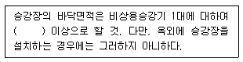
- 2m2
- 4m2
- 5m2
- 6m2
(정답률: 68%)
99. 축냉식 전기냉방설비의 설계기준 내용으로 옳지 않은 것은?
- 열교환기는 시간당 최소냉방열량을 처리할 수 있는 용량 이상으로 설치하여야 한다.
- 자동제어설비는 축냉운전, 방냉운전 또는 냉동기와 축열조를 동시에 이용하여 냉방운전이 가능한 기능을 갖추어야 한다.
- 축열조는 보온을 철저히 하여 열손실과 결로를 방지해야 하며, 맨홀 등 점검을 위한 부분은 해체와 조립이 용이하도록 사용하여야 한다.
- 부분축냉방식의 경우에는 냉동기가 축냉운전 과 방냉운전 또는 냉동기와 축열조의 동시운전이 반복적으로 수행하는데 아무런 지장이 없어야 한다.
(정답률: 53%)
100. 건축물의 출입구에 설치하는 회전문에 관한 기준 내용으로 옳지 않은 것은?
- 회전문과 바닥 사이의 간격은 5cm 이하로 한다.
- 회전문과 문틀 사이의 간격은 5cm 이상으로 한다.
- 계단이나 에스컬레이터로부터 2m 이상 거리를 두어야 한다.
- 회전문의 회전속도는 분당회전수가 8회를 넘지 않도록 한다.
(정답률: 39%)